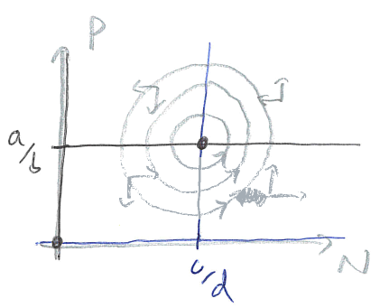
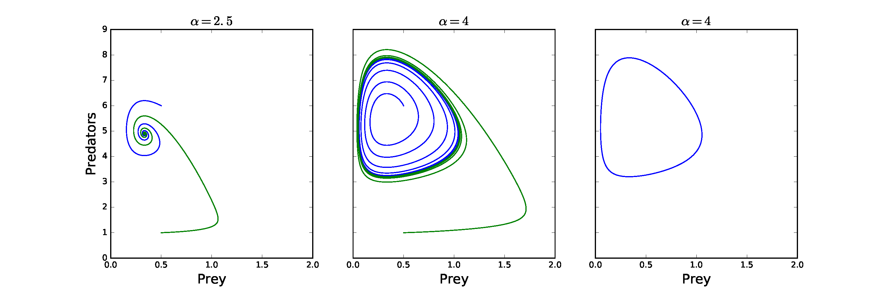

4 - Predator-Prey models ¶
A first model¶
Of course, species in the natural world do not just engage in friendly competition for resources. Nature is ‘red in tooth and claw’, with many species relying on others as a primary food source: foxes and rabbits; lions and zebras; ladybirds and aphids. Such predator-prey interactions will have a similar structure to the competition models we considered above, but now one species benefits from the interaction. Calling the prey density \(N\) and the predator density \(P\), the simplest model would look like this:
The prey has an independent birth rate \(a\), but its death rate depends on the predator density (with parameter \(b\)) with more predators leading to higher prey death. In contrast, the predator has an independent death rate \(c\), but its birth rate depends on the prey density (with parameter \(d\)), with predators needing to eat enough prey to get the energy to reproduce.
Let’s find the equilibria of the system. There is an extinction equilibrium at \((N,P)=(0,0)\), and a coexistence equilibrium at \((N,P)=(c/d,a/b)\). The stability of these steady states is calculated, as before, by finding the Jacobian of the system:
Have a go
Write out the Jacobian matrix for the predator-prey system.
We can see that the trivial equilibrium, \((N,P)=(0,0)\), is unstable (since \(a>0\)). What about the coexistence equilibrium? This evaluates to:
Here, \(T=0\) and \(D=ac>0\). These conditions mean that the eigenvalues at this equilibrium have zero Real part and are purely Imaginary. The behaviour near the steady state is then for ‘centres’, a family of neutrally-stable closed orbits around the equilibrium (note, these are not limit cycles). We therefore predict that these two populations will constantly cycle: with low predation the prey density increases; this produces more food for predators, and so the predator numbers begin to rise; this in turn starts to push the prey numbers back down; finally, with their food supplies falling, the predator numbers also drop down. A phase portrait of these dynamics would look like this,
*Figure: Sketch of phase portrait for predator-prey model shopwing a centre.”
A more realistic model¶
While it is nice to have demonstrated the existence of cycles, these are not structurally stable, which suggests something may not be quite right. From our previous models we might already think of two additions to make the model more realistic. One is that we ignored any density-dependence, meaning prey in particular could grow to infinite levels. Another is that we assumed predation was linearly dependent on prey density, whereas we previously argued it should be saturating. Including these assumptions modifies the model to,
We can see we still have the trivial equilibrium, and some coexistence equilibrium \((N^*,P^*)\). There is now also a new ‘prey-only’ equilibrium at \((N,P)=(a/\alpha,0)\) . The Jacobian of this modified system is,
Prey-only equilibrium
In this case the Jacobian reduces to,
Therefore stability depends on the growth rate of predators. If the growth rate is negative the prey-only equilibrium is stable, but if it is positive the prey-only equilibrium is unstable.
Coexistence equilibrium
Using what we know about this equilibrium to our advantage, the Jacobian becomes,
From here we can find that the determinant is given by, \(D=bdAN^*P^*/(N+A)^3>0\), and the trace by, \(T=-\alpha N^*+bN^*P^*/(N+A)^2\). Stability therefore depends on whether the trace is positive or negative, which depends on the balance of intraspecific prey competition and predation. In fact, losing stability by crossing from a negative to a positive trace leads to a specific type of bifurcation and a new dynamic behaviour.
Hopf bifurcation¶
The previous three bifurcations are the standard types that occur in one and higher dimensions. There are further bifurcations that only occur in two or more dimensions. One of particular importance is the Hopf bifurcation. In this case changing a parameter turns a stable spiral in to an unstable spiral. At this point a unique, stable closed orbit emerges from the equilibrium. This results in the population cycling/oscillating. It is not very easy to draw a bifurcation diagram in this case, but we can see the process by looking at the phase portraits as we vary a parameter.
The example in the figure below comes from the predator-prey model above. Here we see we initially have a stable spiral, but that as we increase \(\alpha\) the equilibrium loses stability and starts to spiral away. However, this outward trajectory does not continue to spiral out but tends towards a closed orbit (which can be seen clearly in the right-hand figure). An initial condition from further away starts to spiral in but also approaches this closed orbit. This is a much stronger result for population cycles than the centres we saw in the simple model. Hopf bifurcations have important consequences as populations which are fluctuating may be much harder to measure or control.
Figure: Example of a Hopf bifurcation in the predator-prey model, equations (1.4.3)-(1.4.4) with a type II functional response. Parameter values: \(a=5\), \(b=1\), \(c=0.5\), \(d=2\), \(A=1\).
Have a go
Use the predator-prey model python code to explore the model. In particular start with a high value of \(\alpha\) and gradually reduce it to see the limit cycle emerge.
3 key points¶
The simplest predator-prey model produces ‘centres’ - structuarally unstable cycles.
A more realistic predator-prey model can produce stable ‘limit cycles’.
We cann the transition from an equilibrium to a limit cycle a Hopf bifurcation.